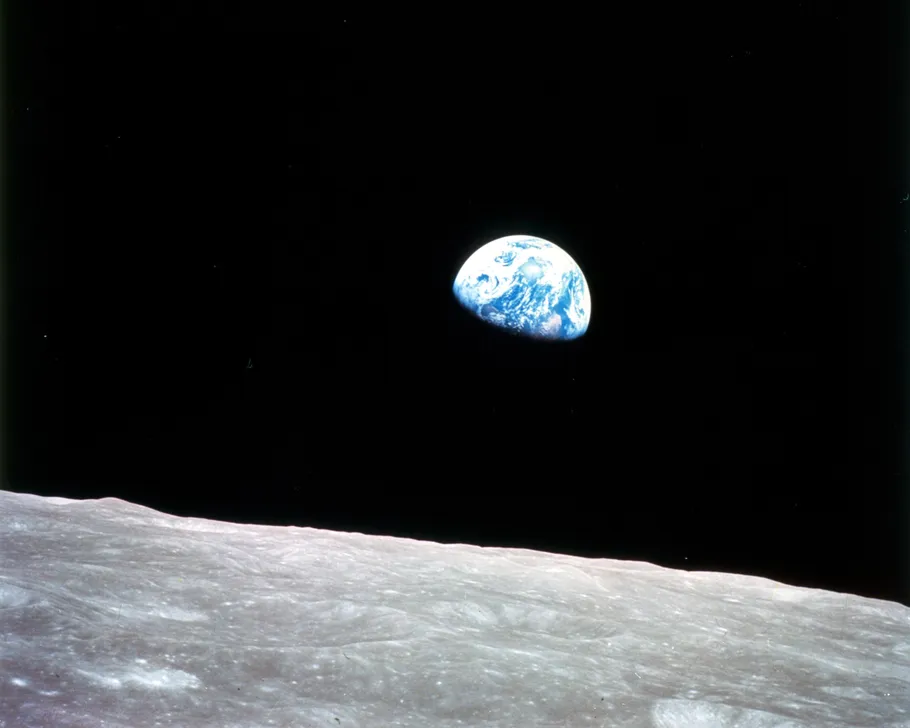

Earth is the third planet from the Sun, the only known world to harbor life, and a unique blend of physical, orbital, and atmospheric characteristics that make it habitable. It has one natural satelite(the Moon), liquid water on its surface, and a protective agnetic field and atmosphere that sustain life.
📌 Key Facts
- Third planet from the Sun, in the Milky Way Galaxy’s Orion Arm
- Distance from Sun: ~150 million km
- Rotation(Day): 23.9 hours
- Orbital Period(Year): 365 days
- Orbital Speed: 29.8 km/s
🌍 Why Earth is Special
It lies in the Sun's "Goldilocks Zone," where conditions are just right for liquid water and life. It's strong magnetic field generated by Earth's molten iron core protects against solar wind and cosmic radiation. It is the only planet with stable liquid water on the surface. Moon is the earths's only natural satellite. Distance of moon from sun is 384,400 km. It influences tides and stabilizes Earth's axial tilt.